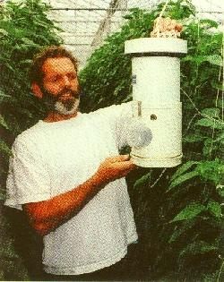

Referenties
Wim en Patrick Grootscholten, Maasdijk
Wim Grootscholten gebruikt al vele jaren Aquanex meetboxvloeistof. "deze vloeistof bespaart ons een fors bedrag per jaar aan onderhoudskosten", zo zegt hij als naar zijn ervaringen gevraagd wordt. "Vochtregeling is van levensbelang voor het kweken van een kwaliteitsproduct. Tot we Aquanex gingen gebruiken was het bij ons de gewoonte, meetboxen wekelijks na te lopen, om te voorkomen, dat door een verkeerde meting de vochtregeling niet goed functioneerde." Aan het woord is Wim Grootscholten, mede-oprichter van de Rainbow Growers Group, die samen met zijn twee zonen op 160.000 meter paprika's kweekt. Ook zijn zoon Patrick, die één van de bedrijven leidt, is enthousiast. "Een probleemloze oplossing, algengroei of vervuiling zijn geheel verdwenen en de meetboxen zien er uit als nieuw sinds we Aquanex gebruiken." Vandaar dat Aquanex meetboxvloeistof en Aquanex kousjes door alle leden van de Rainbow Growers Group als vanzelfsprekend worden gebruikt
Wim en Patrick Grootscholten, Maasdijk
Piet Opgenoort, Huissen
 "In het begin was ik best sceptisch. Ik heb al zoveel geprobeerd en niets hielp. Toen ik dan ook hoorde, dat er een professionele oplossing was, die zich al ruimschoots bewezen had, wou ik het wel uitproberen. En wat blijkt: het werkt! Niet alleen heb ik geen omkijken meer naar mijn meetboxen, buiten dan eens in de zes weken bijvullen, maar ik ben zeker van een nauwkeurige meting, zodat ik niet hoef in te zitten over onnodige stookkosten of een te droog klimaat."
"In het begin was ik best sceptisch. Ik heb al zoveel geprobeerd en niets hielp. Toen ik dan ook hoorde, dat er een professionele oplossing was, die zich al ruimschoots bewezen had, wou ik het wel uitproberen. En wat blijkt: het werkt! Niet alleen heb ik geen omkijken meer naar mijn meetboxen, buiten dan eens in de zes weken bijvullen, maar ik ben zeker van een nauwkeurige meting, zodat ik niet hoef in te zitten over onnodige stookkosten of een te droog klimaat."
"Ik ben meteen begonnen met Aquanex in alle meetboxen, en daar heb ik nog geen minuut spijt van gehad. Na circa twee weken raakten de Aquanex kousjes verstopt door de vervuilingen die achter waren gebleven in de fles. Aquanex heeft al die verontreinigingen opgelost en die komen natuurlijk prompt in het kousje terecht. Na vervangen van kousjes en vloeistof was de zaak gezond. Dat is de laatste keer geweest dat ik er omkijken naar heb gehad! Het is natuurlijk geen goedkoop product, maar alle waar is naar zijn geld, dat blijkt hier maar weer eens."
Piet Opgenoort, Huissen